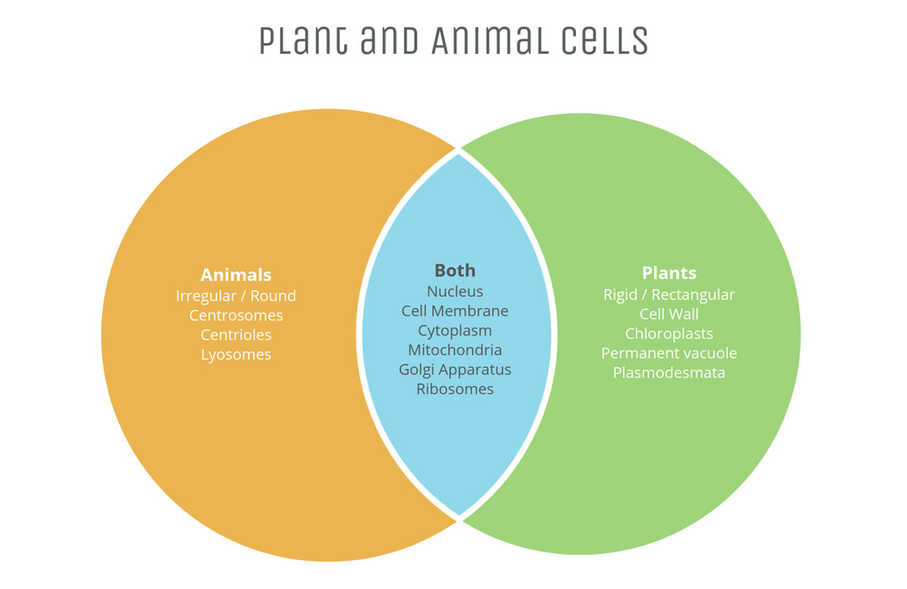
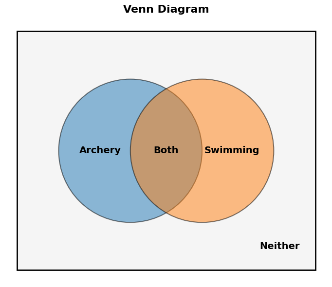

Venn Diagrams and Overlapping Groups
1 Overview
A Venn diagram is a picture made of overlapping circles that helps organize groups of things and show how they relate. Each circle represents one group, and where two circles overlap represents things that belong to both groups. When a word problem gives you a total, describes two overlapping groups, and tells you how many things are in “both,” the trick is to label the overlap with a variable (like \(x\)) and carefully write an equation using the total: \[\text{total} = (\text{group 1}) + (\text{group 2}) - (\text{both}) + (\text{neither})\]
It’s tempting to just add the two group sizes together, but that always double-counts the overlap. Whenever a problem gives you two overlapping groups, ask yourself: “Did I subtract the ‘both’ group exactly once?”
\(30\) students are surveyed. \(20\) like art, \(15\) like music, and \(8\) like both. If you just added \(20 + 15\), what mistake would you be making, and what should you do instead?
Adding \(20 + 15 = 35\) double-counts the \(8\) students who like both — they got counted once in the “art” group and again in the “music” group. To fix it, subtract the overlap once: \(20 + 15 - 8 = 27\) students like at least one.

A good habit is to fill in a Venn diagram from the inside out: start with the overlap (the “both” region), then work outward to fill in each “only” region, and finally use the leftover space for “neither.” Once every region is labeled, all the numbers should add up to the total.
2 Practice Questions
At Riverside Summer Camp, there are \(80\) campers. The number who like swimming is twice the number who like archery. Six campers like both activities. If \(14\) campers like neither activity, how many campers like archery only, and how many like swimming only?

In a class of \(30\) students, \(18\) play soccer and \(15\) play basketball. If \(8\) students play both sports, how many students play neither sport?
There are \(96\) creatures at Monster Academy. The number of creatures with claws is three times the number of creatures with wings. One-third of the creatures with wings also have claws. If \(8\) creatures have neither wings nor claws, how many creatures have claws?
In a survey of \(50\) students, \(60\%\) said they like pizza and \(44\%\) said they like tacos. If \(10\) students like neither food, what percent of all students like both pizza and tacos?
At a school, every student takes at least one elective: art or music. \(45\) students take art, \(38\) take music, and \(15\) take both. How many students are there in total?
At Dragon Middle School, \(72\) students are in the coding club, the robotics club, or both. The number in the coding club is twice the number in the robotics club. Nine students are in both clubs. How many students are in the coding club only (not robotics)?
In a group of \(40\) friends, everyone likes hiking, camping, or both — nobody likes neither. \(25\) friends like hiking and \(22\) like camping. How many friends like both activities?
A pet store surveyed \(60\) customers: \(35\) own a dog, \(20\) own a cat, and \(12\) own both. How many customers own neither a dog nor a cat?